MAKE IT FEEL SOMETHING ✳ MAKE IT FEEL SOMETHING ✳ MAKE IT FEEL SOMETHING ✳
A LITTLE ABOUT ME / 02
Grounded in insight. Driven by curiosity.
Hi, I’m Hongruo Yin, a Senior UX/UI Designer. With a background in technology and art, I use creativity to solve everyday problems and make digital experiences more intuitive, useful, and engaging.
I bring over seven years of experience in responsive web design, design systems, and stakeholder collaboration. My work is grounded in user insights, with a focus on simplifying workflows and helping people connect with the products they use.
01 — UX research & strategy02 — Responsive web design03 — Interface design04 — Design systems
Work history
Edgio
Senior UX/UI Designer
2021 – Present
Moovweb
Web Designer
2017 – 2021
Uncommon Goods
Freelance UX Designer
Education
Academy of Art University
MFA in Web Design & New Media
2015 – 2016
University of Iowa
BBA in Accounting
2010 – 2014
Selected clients
I’ve worked with teams at Edgio, City National Bank, United Airlines, Universal Standard, and Uncommon Goods to launch user-friendly digital experiences and improve conversion rates.
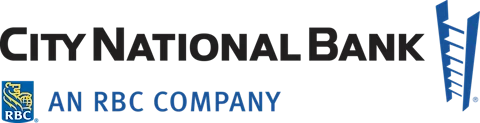
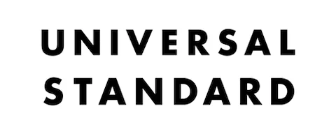
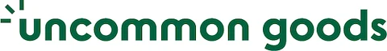
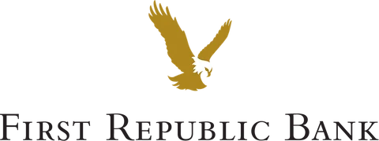
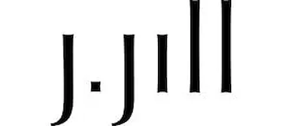
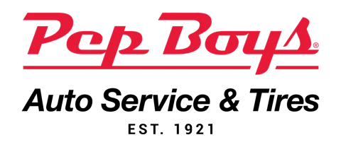
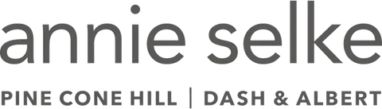
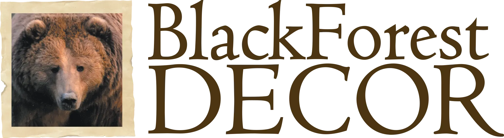
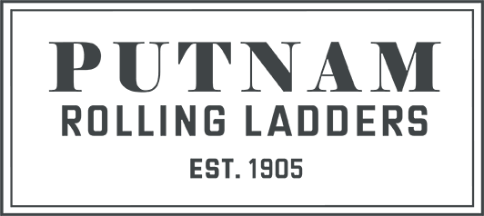
HAVE SOMETHING IN MIND?GOOD THINGS START WITH A HELLO.
Following a major merger in December 2022, Edgio needed a digital presence that reflected its evolving identity. The existing website felt dated, presented information inconsistently, and made it difficult for visitors to find what they needed.
Working with the marketing team, I helped align the visual direction and UX strategy with the company’s business goals. The redesign focused on clearer navigation, more useful content, and a consistent, modern interface.
Refresh the visual identity. Translate the new brand into a cohesive digital experience.
Improve discovery. Help visitors find relevant products, solutions, and company information.
Support engagement. Build clearer paths between pages and toward meaningful next steps.
RESULTS / FIRST THREE MONTHS
A more engaging experience.
During the first three months of the progressive rollout, the website recorded improvements in engagement:
Reduction in bounce rate
23%
Increase in engaged sessions per user
8%
Increase in engagement rate
7%
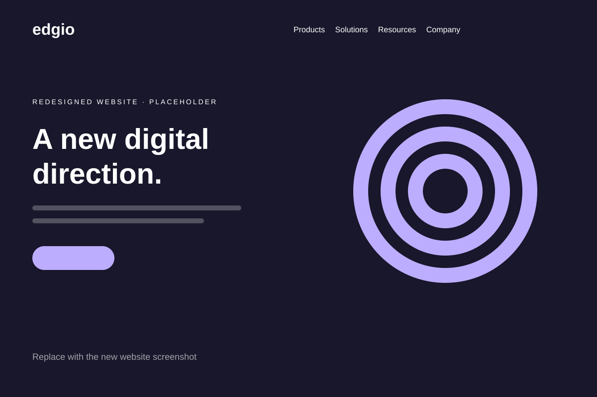
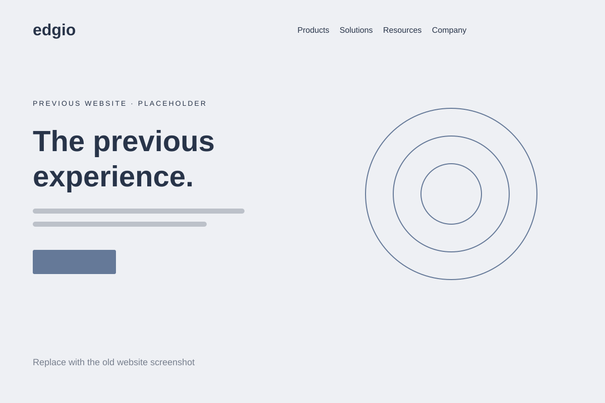
BeforeAfter
‹›
02 — Before & after · Drag the divider or use arrow keys. Illustrative placeholders — original website screenshots to be added.
02 / RESEARCH
Start with what visitors need.
We interviewed customers across four user groups to understand their needs and frustrations. I translated their feedback into personas that captured visitors’ backgrounds, entry points, challenges, and desired outcomes.
Alongside interviews, we reviewed user behavior and mapped journeys through the existing site. Three recurring issues shaped the redesign:
A dated visual experience. Stakeholders wanted a brighter, more engaging expression of the brand.
Disconnected journeys. Weak links between pages, unreliable search, and a restrictive menu made exploration difficult.
Missing information. Visitors needed clearer pricing and more information about company leadership.
EDGIO / IMAGE TO BE ADDEDUser groups & personas
03 — Research synthesis, user needs, and key journeys
03 / NAVIGATION
Design around the visitor’s next step.
I reviewed competitor websites to understand how they organized content and guided visitors toward related information. These observations informed page-flow diagrams, revised user journeys, and a new sitemap.
Working with the Marketing Director, I organized content into clearer categories and mapped the connections between pages. A new mega menu gave visitors a broader view of the site and more direct paths to products, solutions, and supporting resources.
EDGIO / IMAGE TO BE ADDEDPage flows & sitemap
04 — Goal-oriented journeys and the revised information architecture
EDGIO / IMAGE TO BE ADDEDMega menu
05 — Navigation structure across desktop and mobile
04 / DESIGN SYSTEM
One visual language, built to scale.
The existing interface had an understated visual tone, inconsistent use of branding, contrast issues, and limited support for international characters. I developed a component-based style library in Figma to bring greater consistency to the redesign.
The library connected typography, color, reusable components, and interaction patterns. This gave the team a shared foundation for translating the refreshed identity across the website.
EDGIO / IMAGE TO BE ADDEDDesign system
06 — Typography, color, components, and interaction states
05 / INTERFACE DESIGN
From content structure to a complete experience.
I used page-flow diagrams to define both the relationships between pages and the hierarchy of content within them. Mid-fidelity wireframes provided a practical starting point for reviews with the Marketing Director.
Once layouts were approved, I developed high-fidelity mockups and presented the visual direction to the board. I also designed graphics for the homepage and product previews, collaborating with a graphic designer on imagery for product and solution pages.
Microinteractions and animation supported the new visual direction, helping make the experience more approachable and engaging.
EDGIO / IMAGE TO BE ADDEDWireframes → final interface
07 — Layout exploration and high-fidelity design
06 / THE LAUNCH
A clearer experience, across the site.
The redesign rolled out progressively, bringing the refreshed brand and navigation approach to key parts of the website.
Homepage
Stronger visual storytelling, clearer navigation, and focused calls to action.
Product & solution pages
More structured content and clearer next steps to help visitors explore relevant offerings.
Blog & customer stories
Improved previews and browsing, with author information, PDF downloads, and article sharing.
Pricing, careers & company
Clearer pricing information, a conversion-focused contact page, and content highlighting leadership and opportunities.
EDGIO / IMAGE TO BE ADDEDHomepage & product pages
08 — Final website screens
EDGIO / IMAGE TO BE ADDEDEditorial & company pages